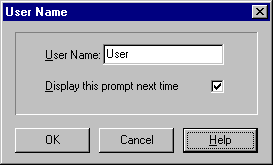

User name
It is convenient to distinguish between data created by different users.

User Name Configuration
To identify the database files you create, enter a name in the User Name field. You can use any combination of up to eight letters; using your own name is often a good choice.
If you prefer not to be prompted for a User Name the next time you start OptiChar, check the box labeled Display this prompt next time.
If you need to change your user name or restore the display of this dialog, you can do so in the Options/Data Dialog accessed from the Configuration Menu.